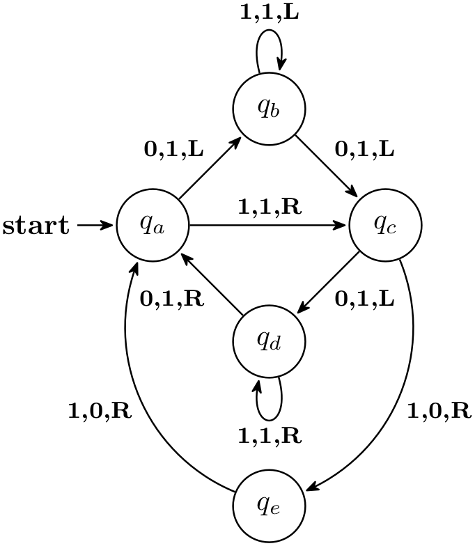

The TikZ and PGF Packages
Manual for version 3.1.9a
Libraries
43 Automata Drawing Library
TikZ Library automata ¶
\usetikzlibrary{automata} %
LaTeX
and plain
TeX
\usetikzlibrary[automata] % ConTeXt
This packages provides shapes and styles for drawing finite state
automata and Turing machines.
43.1 Drawing Automata¶
The automata (drawing) library is intended to make it easy to draw finite automata and Turing machines. It does not cover every situation imaginable, but most finite automata and Turing machines found in text books can be drawn in a nice and convenient fashion using this library.
To draw an automaton, proceed as follows:
-
1. For each state of the automaton, there should be one node with the option state.
-
2. To place the states, you can either use absolute positions or relative positions, using options like above or right.
-
3. Give a unique name to each state node.
-
4. Accepting and initial states are indicated by adding the options accepting and initial, respectively, to the state nodes.
-
5. Once the states are fixed, the edges can be added. For this, the edge operation is most useful. It is, however, also possible to add edges after each node has been placed.
-
6. For loops, use the edge [loop] operation.
Let us now see how this works for a real example. Let us consider a nondeterministic four state automaton that checks whether an input contains the sequence \(0^*1\) or the sequence \(1^*0\).
\usetikzlibrary {automata,positioning}
\begin{tikzpicture}[shorten >=1pt,node distance=2cm,on grid,auto]
\draw[help lines] (0,0) grid
(3,2);
\node[state,initial] (q_0) {$q_0$};
\node[state] (q_1) [above right=of q_0] {$q_1$};
\node[state] (q_2) [below right=of q_0] {$q_2$};
\node[state,accepting](q_3) [below right=of q_1] {$q_3$};
\path[->] (q_0) edge
node
{0} (q_1)
edge
node
[swap] {1} (q_2)
(q_1) edge
node
{1} (q_3)
edge
[loop above] node
{0} ()
(q_2) edge
node
[swap] {0} (q_3)
edge
[loop below] node
{1} ();
\end{tikzpicture}
43.2 States With and Without Output¶
The state style actually just “selects” a default underlying style. Thus, you can define multiple new complicated state style and then simply set the state style to your given style to get the desired kind of styles.
By default, the following state styles are defined:
/tikz/state without output(style, no value) ¶
This node style causes nodes to be drawn as circles. Also, this style calls every state.
/tikz/state with output(style, no value) ¶
This node style causes nodes to be drawn as split circles, that is, using the circle split shape. In the upper part of the shape you have the name of the style, in the lower part the output is placed. To specify the output, use the command \nodepart{lower} inside the node. This style also calls every state.
\usetikzlibrary {automata}
\begin{tikzpicture}
\draw[help lines] (0,0) grid
(3,2);
\node[state without output] {$q_0$};
\node[state with output] at
(2,0) {$q_1$
\nodepart{lower} $00$};
\end{tikzpicture}
/tikz/state(style, initially state without output) ¶
You should redefine it to something else, if you wish to use states of a different nature.
\usetikzlibrary {automata}
\begin{tikzpicture}[state/.style=state with output]
\node[state] {$q_0$
\nodepart{lower} $11$};
\node[state] at
(2,0) {$q_1$
\nodepart{lower} $00$};
\end{tikzpicture}
/tikz/every state(style, initially empty) ¶
This style is used by state with output and also by state without output. By default, it does nothing, but you can use it to make your state look more fancy:
\usetikzlibrary {arrows.meta,automata,positioning}
\begin{tikzpicture}[shorten >=1pt,node distance=2cm,on grid,>={Stealth[round]},
every state/.style={draw=blue!50,very thick,fill=blue!20}]
\node[state,initial] (q_0) {$q_0$};
\node[state] (q_1) [above right=of q_0] {$q_1$};
\node[state] (q_2) [below right=of q_0] {$q_2$};
\path[->] (q_0) edge
node
[above left] {0} (q_1)
edge
node
[below left] {1} (q_2)
(q_1) edge
[loop above] node
{0} ()
(q_2) edge
[loop below] node
{1} ();
\end{tikzpicture}
43.3 Initial and Accepting States¶
The styles initial and accepting are similar to the state style as they also just select an “underlying” style, which installs the actual settings for initial and accepting states.
Let us start with the initial states.
/tikz/initial(style, initially initial by arrow) ¶
This style is used to draw initial states.
/tikz/initial by arrow(style, no value) ¶
This style causes an arrow and, possibly, some text to be added to the node. The arrow points from the text to the node. The node text and the direction and the distance can be set using the following key:
/tikz/initial text=⟨text⟩ (no default, initially start) ¶
This key sets the text to be used. Use an empty text to suppress all text.
/tikz/initial where=⟨direction⟩ (no default, initially left) ¶
Set the place where the text should be shown. Allowed values are above, below, left, and right.
/tikz/initial distance=⟨distance⟩ (no default, initially 3ex) ¶
Sets the length of the arrow leading from the text to the state node.
/tikz/every initial by arrow(style, initially empty) ¶
This style is executed at the beginning of every path that contains the arrow and the text. You can use it to, say, make the text red or whatever.
\usetikzlibrary {automata}
\begin{tikzpicture}[every initial by arrow/.style={text=red,->>}]
\node[state,initial,initial distance=2cm] {$q_0$};
\end{tikzpicture}
/tikz/initial above(style, no value) ¶
This is a shorthand for initial by arrow,initial where=above.
/tikz/initial below(style, no value) ¶
Works similarly to the previous option.
/tikz/initial left(style, no value) ¶
Works similarly to the previous option.
/tikz/initial right(style, no value) ¶
Works similarly to the previous option.
/tikz/initial by diamond(style, no value) ¶
This style uses a diamond to indicate an initial node.
For the accepting states, the situation is similar: There is also an accepting style that selects the way accepting states are rendered. There are now two options: First, accepting by arrow, which works the same way as initial by arrow, only with the direction of arrow reversed, and accepting by double, where accepting states get a double line around them.
/tikz/accepting(style, initially accepting by double) ¶
This style is used to draw accepting states. You can replace this by the style accepting by arrow to get accepting states with an arrow leaving them.
/tikz/accepting by double(style, no value) ¶
This style causes a double line to be drawn around a state.
/tikz/accepting by arrow(style, no value) ¶
This style causes an arrow and, possibly, some text to be added to the node. The arrow points to the text from the node.
The same options as for initial states can be used, only with initial replaced by accepting:
/tikz/accepting text=⟨text⟩ (no default, initially empty) ¶
This key sets the text to be used.
/tikz/accepting where=⟨direction⟩ (no default, initially right) ¶
Set the place where the text should be shown. Allowed values are above, below, left, and right.
/tikz/initial distance=⟨distance⟩ (no default, initially 3ex)
Sets the length of the arrow leading from the text to the state node.
/tikz/every accepting by arrow(style, initially empty) ¶
Executed at the beginning of every path that contains the arrow and the text.
\usetikzlibrary {arrows.meta,automata,positioning}
\begin{tikzpicture}
[shorten >=1pt,node distance=2cm,on grid,>={Stealth[round]},initial text=,
every state/.style={draw=blue!50,very thick,fill=blue!20},
accepting/.style=accepting by arrow]
\node[state,initial] (q_0) {$q_0$};
\node[state] (q_1) [above right=of q_0] {$q_1$};
\node[state] (q_2) [below right=of q_0] {$q_2$};
\node[state,accepting](q_3) [below right=of q_1] {$q_3$};
\path[->] (q_0) edge
node
[above left] {0} (q_1)
edge
node
[below left] {1} (q_2)
(q_1) edge
node
[above right] {1} (q_3)
edge
[loop above] node
{0} ()
(q_2) edge
node
[below right] {0} (q_3)
edge
[loop below] node
{1} ();
\end{tikzpicture}
/tikz/accepting above(style, no value) ¶
This is a shorthand for accepting by arrow,accepting where=above.
/tikz/accepting below(style, no value) ¶
Works similarly to the previous option.
/tikz/accepting left(style, no value) ¶
Works similarly to the previous option.
/tikz/accepting right(style, no value) ¶
Works similarly to the previous option.
43.4 Examples¶
In the following example, we once more typeset the automaton presented in the previous sections. This time, we use the following rule for accepting/initial state: Initial states are red, accepting states are green, and normal states are orange. Then, we must find a path from a red state to a green state.
\usetikzlibrary {arrows.meta,automata,positioning,shadows}
\begin{tikzpicture}[shorten >=1pt,node distance=2cm,on grid,>={Stealth[round]},thick,
every state/.style={fill,draw=none,orange,text=white,circular drop shadow},
accepting/.style ={green!50!black,text=white},
initial/.style ={red,text=white}]
\node[state,initial] (q_0) {$q_0$};
\node[state] (q_1) [above right=of q_0] {$q_1$};
\node[state] (q_2) [below right=of q_0] {$q_2$};
\node[state,accepting](q_3) [below right=of q_1] {$q_3$};
\path[->] (q_0) edge
node
[above left] {0} (q_1)
edge
node
[below left] {1} (q_2)
(q_1) edge
node
[above right] {1} (q_3)
edge
[loop above] node
{0} ()
(q_2) edge
node
[below right] {0} (q_3)
edge
[loop below] node
{1} ();
\end{tikzpicture}
The next example is the current candidate for the five-state busiest beaver:

\usetikzlibrary {arrows.meta,automata,positioning}
\begin{tikzpicture}[->,>={Stealth[round]},shorten >=1pt,%
auto,node distance=2cm,on grid,semithick,
inner sep=2pt,bend angle=45]
\node[initial,state] (A) {$q_a$};
\node[state] (B) [above right=of A] {$q_b$};
\node[state] (D) [below right=of A] {$q_d$};
\node[state] (C) [below right=of B] {$q_c$};
\node[state] (E) [below=of D] {$q_e$};
\path [every node/.style={font=\footnotesize}]
(A) edge
node
{0,1,L} (B)
edge
node
{1,1,R} (C)
(B) edge
[loop above] node
{1,1,L} (B)
edge
node
{0,1,L} (C)
(C) edge
node
{0,1,L} (D)
edge
[bend left] node
{1,0,R} (E)
(D) edge
[loop below] node
{1,1,R} (D)
edge
node
{0,1,R} (A)
(E) edge
[bend left] node
{1,0,R} (A);
\end{tikzpicture}